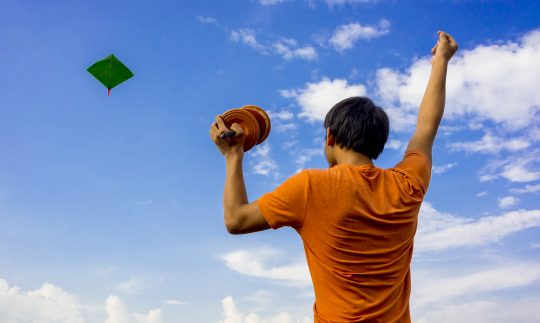
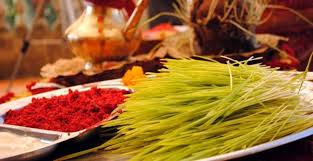
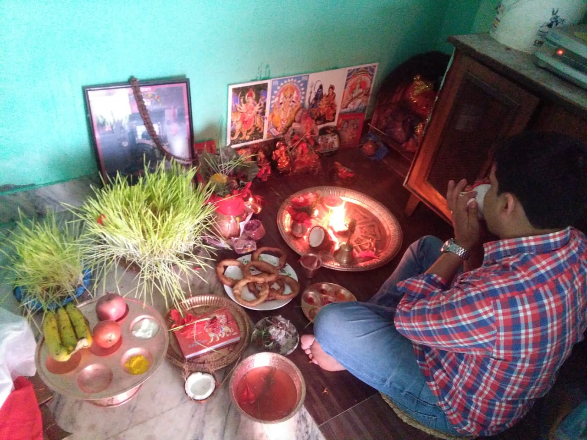

Dashain, also known as Bijaya Dashami, is the grandest, longest and most auspicious festival in Nepal. It takes place in Nepali Ashiwin month (September to October in Solar Calendar) and lasts for 15 days. Similar to Chinese Spring Festival, Dashain is celebrated by the whole country for the goddess Durgar's victory over the demon Mahishasura. In addition to worship the Goddess Durga, Nepalis will hold celebrations for the fertility of the land and a year of good harvest. Meanwhile, Dasain has also emphasized the importance of family reunion, which is helpful to ease social contradictions. All the government agencies, educational institutions and other public sectors will be closed down during this festival period.
Since Nepal lunar calendar won't be issued one year ahead, it's really hard for us to pinpoint the exact date of Dashain. However, it usually occurs in September to October. For example, Nepalese have enjoyed this bustling festival from Oct. 12 to 26, 2015 and Oct.2 to 16, 2016. As for Nepal Dashain this year, please feel free to contact us for further consulting.
Background of Dashain, Nepal’s Biggest Festival
Dasain symbolizes the victory of the justice over evil. Once upon a time, the Goddess Durga with ten different manifestations dressed in the red robe, rode the tiger and armed herself with magic weapons to combat with the demon Mahishasura. After fighting for nine days and nights, Goddess Durgar finally killed the devil and saved the whole country. To commemorate the courageous Durgar, the king of Nepal respected her as “the sacred protector”. Since then, offering the sacrifices to the Goddess has become one of the most popular festive rituals.

Traditions of Dashain Festival
Enthusiastic Nepalese often celebrate Dashain Festival for fifteen days, among which the most important dates are the first, the seventh, the eighth, the ninth and the tenth.
Day 1 Ghatasthapana, sowing holy Jamara
Ghatasthapana (sowing Jamara) coincides with the first day of Dasain Festival. People usually use a kalasha to symbolize the Goddess Durgar. On this day, the kalasha is filled with holy water, then mixed with barley seeds and cow dung, finally delivered to the priest to pray for the blessings of the Goddess Durgar. After the ceremony, the kalasha will be placed in the room. Traditionally, outsiders and women are not allowed to enter. Men will worship the kalasha twice a day, one time in the morning and another at night. However, with the development of society, women also have the right to worship now. Kalasha is protected from direct sunlight and carefully watered every day. Then the seeds begin to sprout. Several days later, five or six inches long yellow grass would thrive in the kalasha.

Sacred Jamara in Dashain Festival
This holy grass is called as Jamara and those rituals will last until the seventh days.
Day 7 Fulpati, presenting sacred flowers
Phulpati (sacred flowers) is the grand celebration on seventh day of Dashain Festival. On this day, the Brahmins would carry royal kalasha, holy jamara, banana stalks and sugar cane tied with red cloth from Gorkha to Kathmandu. It often takes them three days to complete this 169-kilometer-long trekking. Hundreds of government officials would gather together in traditional dresses and witness the fulpati parade with the king. After 2008, the royal family was overthrown and the ancient tradition has been changed. Now, the president of Nepal has replaced the king to hold the ceremony.
Fulpati parade in Dashain Festival
The fulpati parade is heading towards the Hanuman Dhoka royal palace.
Day 8: Maha Asthami, slaughtering the livestock
The eighth day is a bloody day in Dashain Festival. It is held for Kali, the most horrible manifestation of the Goddess Durgar. On this day, scores of livestock in temples of Nepal will be slaughtered to appease the goddess. This night is also known as “Black Night”. When the midnight comes, people will cut off the heads of 8 buffaloes and 108 goats at the courtyards near Durbar Square. After being dedicated to the Goddess, those meat would be brought home and called as "Prasad". And it's said that eating Prasad will bring good luck.
Nepal festival of slaughter
Nepalese are killing buffaloes to worship the Goddess Durgar.
Cutting buffaloes into cubes
Animals are cut into pieces after the ceremony.

Day 9: Maha Navami, visiting Taleju Temple
The ninth day is known as Maha Navami, during which all the celebrations and ceremonies will reach the peak. On this day, the Nepalese army sacrifice the buffaloes for the official worship and pray to Durgar for the invincible courage. Nepalis slaughter their livestock to sacrifice their own cars or motorcycle and the airlines also have blood sprinkled on the aircraft tires, hoping to avoid traffic accidents in the coming year. The Taleju Temples in Kathmandu, Patan and Bhaktapur will be open to the public only on this day of year. You'll see numerous people line up to visit Taleju Temple and beg for Goddess' blessings. Every household will eat goat meat on this night.
Nepal festival of killing animals
Chickens will be also killed for the goddess's blessing.
Offfering blood to the goddess
Blood, a symbol of fertility, is sacrificed to Durgar.
Day 10: Vijaya Dashami, receiving Tika from the elder relatives
Vijaya Dashami is the great time for family reunion. On this day, relatives and friends will exchange greeting cards and gifts with each other. Parents will place a Tika (red cinnabar dot) on the child's forehead. When the night falls, you'll have the chance to observe splendid parades and masked dances in the Kathmandu valley.
family reunions in Dashain Festival
The daddy is driving kids home for the family dinner.
Receiving Tika on the tenth day of Dashain
After taking Tika from the elder, the little kid was hanging out with his parents.
Getting ready for Deshain events
The man is preparing for the festive parade.
Day 15: Kojagrata Purnima, worshiping the goddess of wealth and luck
Kojagrata Purnima, the full moon day, masks the ending of Dashain Festival. Literally, Kojagrata means "who is awake". On this day, Laxmi, the goddess of wealth and luck, will come to earth and bless the people who didn't sleep all night. Therefore, it has become an excuse for Nepalese people to gamble overnight.
Dashain blessings from the Goddess of Laxmi
Nepalese are staying up all night for the goddess' blessings.
Celebrations in Dashain Festival
Tourists can experience Nepal religious culture and traditional customs by attending the various kinds of celebrations, like Dashain flying kites, Dashain cards, etc.
Dashain flying kites
Kite-flying is regarded as an important way to remind the gods not to rain anymore. During Dashain Festival, you'll see people of all ages flying kites everywhere. Under the cozy sunshine, the pure blue sky is packed with colorful kites of different sizes and shapes. The whole valley is immersed in cheerful laughter and happiness.
Playing cards in Dashain
Card-playing is another way to spend Dasain Festival. The family members would get together and play cards while joking with each other.
Purchasing and buying new clothes
Shopping and buying new clothes is a key part of Dashain Festival. As many people live in rural areas, most of them would only purchase goods and new clothes in Dashain Nepali Holidays. During this period, almost all of the country's stores will offer festive discounts, which makes shopping more attractive.
Playing on the swings and ferris wheels
Different types of exhibitions and festivities will also be held during Nepal's biggest festival. Ferris wheels and traditional swings will be organized in small bazaars to entertainment the masses. And you'll come across commercial exhibitions in the cities.
Traditionally speaking, Dashain Festival is to Nepalese what Christmas is to Westerners. The biggest trouble for foreign travelers to experience this grand festival is the closure of service industry. Especially from the seventh to the tenth day, your costs must be much higher than the usual. And Tibet Visa is ready to help you to make your Nepal trip more convenient and unforgettable. Please don't hesitate to contact us to make an earlier booking for Nepal festivals.